<meta charset="utf-8">
<title>Portfolio Ψηφιακών Μαθημάτων</title>
<link rel="preconnect" href="https://fonts.googleapis.com">
<link rel="preconnect" href="https://fonts.gstatic.com" crossorigin>
<link rel="stylesheet" href="https://fonts.googleapis.com/css2?family=Alegreya+Sans:wght@400;500;700;800&family=Literata:opsz,wght@7..72,400;7..72,500&family=Roboto+Mono:wght@400;500&display=swap">

<style>
/* ============ tokens ============ */
:root{
  --paper:#EEF1EF;
  --surface:#FFFFFF;
  --surface-2:#E4E9E6;
  --ink:#121C18;
  --muted:#5B6B64;
  --faint:#87958E;
  --line:#D2DAD5;
  --line-strong:#B4C0BA;
  --accent:#1F5E45;
  --accent-soft:#E3EDE8;
  --shadow:0 1px 2px rgba(18,28,24,.06), 0 8px 24px -18px rgba(18,28,24,.5);

  --display:"Alegreya Sans","Segoe UI",Arial,sans-serif;
  --body:"Literata",Georgia,"Times New Roman",serif;
  --mono:"Roboto Mono",ui-monospace,"Consolas",monospace;

  --measure:66ch;
  --gutter:clamp(20px,5vw,64px);
}
@media (prefers-color-scheme: dark){
  :root:not([data-theme="light"]){
    --paper:#0D1411;
    --surface:#141E1A;
    --surface-2:#1A2621;
    --ink:#E4EAE6;
    --muted:#93A29B;
    --faint:#71807A;
    --line:#243129;
    --line-strong:#33443B;
    --accent:#54BC8E;
    --accent-soft:#17281F;
    --shadow:0 1px 2px rgba(0,0,0,.4), 0 10px 30px -20px rgba(0,0,0,.9);
  }
}
:root[data-theme="dark"]{
  --paper:#0D1411;
  --surface:#141E1A;
  --surface-2:#1A2621;
  --ink:#E4EAE6;
  --muted:#93A29B;
  --faint:#71807A;
  --line:#243129;
  --line-strong:#33443B;
  --accent:#54BC8E;
  --accent-soft:#17281F;
  --shadow:0 1px 2px rgba(0,0,0,.4), 0 10px 30px -20px rgba(0,0,0,.9);
}

*{box-sizing:border-box}
body{
  margin:0;
  background:var(--paper);
  color:var(--ink);
  font-family:var(--body);
  font-size:17px;
  line-height:1.62;
  -webkit-font-smoothing:antialiased;
}
img{max-width:100%;display:block}
a{color:var(--accent)}

/* ============ shell ============ */
.wrap{max-width:1160px;margin:0 auto;padding:0 var(--gutter)}

.topbar{
  border-bottom:1px solid var(--line);
  background:var(--paper);
  position:sticky;top:0;z-index:20;
}
.topbar .wrap{
  display:flex;align-items:baseline;gap:16px;flex-wrap:wrap;
  padding-top:14px;padding-bottom:14px;
}
.mark{
  font-family:var(--display);font-weight:800;font-size:15px;
  letter-spacing:.14em;text-transform:uppercase;
}
.topbar nav{margin-left:auto;display:flex;gap:18px;flex-wrap:wrap}
.topbar nav a{
  font-family:var(--mono);font-size:11.5px;letter-spacing:.08em;
  text-transform:uppercase;color:var(--muted);text-decoration:none;
  border-bottom:1px solid transparent;padding-bottom:2px;
}
.topbar nav a:hover,.topbar nav a:focus-visible{color:var(--ink);border-bottom-color:var(--accent)}

:where(a,button):focus-visible{outline:2px solid var(--accent);outline-offset:3px;border-radius:2px}

/* ============ hero ============ */
.hero{padding:clamp(48px,8vw,104px) 0 clamp(36px,5vw,60px)}
.eyebrow{
  font-family:var(--mono);font-size:11.5px;letter-spacing:.16em;
  text-transform:uppercase;color:var(--accent);margin:0 0 22px;
}
h1{
  font-family:var(--display);font-weight:800;
  font-size:clamp(38px,6.4vw,76px);line-height:1.02;
  letter-spacing:-.018em;margin:0 0 26px;max-width:16ch;
  text-wrap:balance;
}
.lede{font-size:clamp(18px,2.1vw,21px);max-width:var(--measure);margin:0 0 14px;color:var(--ink)}
.lede-sub{max-width:var(--measure);margin:0;color:var(--muted);font-size:16px}

/* ---- corpus spec table ---- */
.corpus{
  margin-top:clamp(36px,5vw,56px);
  border-top:1px solid var(--line-strong);
  border-bottom:1px solid var(--line);
}
.corpus dl{
  margin:0;display:grid;
  grid-template-columns:repeat(auto-fit,minmax(168px,1fr));
}
.corpus div{
  padding:18px 20px 16px 0;
  border-right:1px solid var(--line);
}
.corpus div:last-child{border-right:0}
.corpus dt{
  font-family:var(--mono);font-size:10.5px;letter-spacing:.1em;
  text-transform:uppercase;color:var(--muted);margin-bottom:6px;
}
.corpus dd{
  margin:0;font-family:var(--display);font-weight:800;
  font-size:30px;line-height:1.1;font-variant-numeric:tabular-nums;
}
.corpus dd small{
  display:block;font-family:var(--body);font-weight:400;
  font-size:13.5px;line-height:1.4;color:var(--muted);margin-top:4px;
}

/* ============ sections ============ */
section{padding:clamp(46px,6vw,78px) 0}
.section-head{
  display:flex;align-items:baseline;gap:14px;
  border-bottom:1px solid var(--line-strong);
  padding-bottom:12px;margin-bottom:clamp(30px,4vw,46px);
}
.section-head h2{
  font-family:var(--display);font-weight:800;
  font-size:clamp(22px,2.6vw,30px);letter-spacing:-.01em;margin:0;
}
.section-head .count{
  margin-left:auto;font-family:var(--mono);font-size:11.5px;
  letter-spacing:.08em;color:var(--muted);text-transform:uppercase;
}

/* ============ plate ============ */
.plate{
  padding-top:clamp(34px,4.5vw,52px);
  border-top:1px solid var(--line);
}
.plate:first-of-type{border-top:0;padding-top:0}
.plate + .plate{margin-top:clamp(34px,4.5vw,52px)}

.plate-code{
  font-family:var(--mono);font-size:11px;letter-spacing:.08em;line-height:1.7;
  text-transform:uppercase;color:var(--muted);margin-bottom:10px;
}
.plate-code b{color:var(--accent);font-weight:500}
.plate h3{
  font-family:var(--display);font-weight:800;
  font-size:clamp(25px,3.2vw,38px);line-height:1.1;
  letter-spacing:-.014em;margin:0 0 14px;text-wrap:balance;
}
.plate > p{max-width:var(--measure);margin:0 0 18px;color:var(--ink)}
.plate > p.note{color:var(--muted);font-size:15.5px}

.shot{
  margin:0 0 18px;
  border:1px solid var(--line-strong);
  background:var(--surface-2);
  box-shadow:var(--shadow);
  overflow:hidden;
}
.shot img{width:100%;height:auto;aspect-ratio:1440/900;object-fit:cover;object-position:top center}
figure.shot figcaption{
  font-family:var(--mono);font-size:10.5px;letter-spacing:.06em;
  color:var(--muted);padding:8px 12px;border-top:1px solid var(--line);
  background:var(--surface);
}
.strip{
  display:grid;gap:14px;margin:0 0 18px;
  grid-template-columns:repeat(auto-fit,minmax(230px,1fr));
}
.strip .shot{margin:0}

/* ---- spec strip ---- */
.spec{
  margin:0 0 20px;
  border-top:1px solid var(--line-strong);
  border-bottom:1px solid var(--line);
  display:grid;gap:0;
  grid-template-columns:repeat(auto-fit,minmax(152px,1fr));
}
.spec div{padding:12px 16px 12px 0;border-right:1px solid var(--line)}
.spec div:last-child{border-right:0}
.spec dt{
  font-family:var(--mono);font-size:10px;letter-spacing:.1em;
  text-transform:uppercase;color:var(--faint);margin-bottom:4px;
}
.spec dd{
  margin:0;font-family:var(--mono);font-size:13.5px;
  color:var(--ink);font-variant-numeric:tabular-nums;line-height:1.45;
}

/* ---- open demo row ---- */
.open-row{
  display:flex;flex-wrap:wrap;align-items:center;gap:8px;
  margin:0 0 22px;
}
.open-row .lbl{
  font-family:var(--mono);font-size:10.5px;letter-spacing:.1em;
  text-transform:uppercase;color:var(--faint);margin-right:4px;
}
.open-row a{
  font-family:var(--mono);font-size:12px;letter-spacing:.02em;
  text-decoration:none;color:var(--ink);
  border:1px solid var(--line-strong);
  padding:6px 12px;line-height:1.3;
  background:var(--surface);
}
.open-row a:hover,.open-row a:focus-visible{
  border-color:var(--accent);color:var(--accent);background:var(--accent-soft);
}
.open-row a.primary{
  border-color:var(--accent);color:var(--accent);font-weight:500;
}
ul.feat + .open-row,
p.note + .open-row{margin-top:22px}

/* ---- feature list ---- */
ul.feat{
  list-style:none;padding:0;margin:0 0 4px;max-width:var(--measure);
  display:grid;gap:9px;
}
ul.feat li{
  position:relative;padding-left:20px;font-size:16px;line-height:1.55;
}
ul.feat li::before{
  content:"";position:absolute;left:0;top:.62em;
  width:7px;height:1px;background:var(--accent);
}
ul.feat li b{font-weight:500;font-family:var(--body)}

/* ============ tech ============ */
.tech-grid{
  display:grid;gap:clamp(22px,3vw,38px);
  grid-template-columns:repeat(auto-fit,minmax(268px,1fr));
  align-items:start;
}
.tech-grid h4{
  font-family:var(--display);font-weight:700;font-size:18px;
  margin:0 0 10px;letter-spacing:-.005em;
  padding-bottom:8px;border-bottom:1px solid var(--line);
}
.tech-grid p{margin:0 0 10px;font-size:15.5px;color:var(--muted)}
.tech-grid code{
  font-family:var(--mono);font-size:12.5px;
  background:var(--accent-soft);color:var(--accent);
  padding:1px 5px;
}
.tech-grid ul{list-style:none;padding:0;margin:0;display:grid;gap:7px}
.tech-grid li{font-size:15.5px;line-height:1.5}
.tech-grid li span{
  font-family:var(--mono);font-size:11px;letter-spacing:.06em;
  text-transform:uppercase;color:var(--faint);display:block;
}

/* ============ closing ============ */
.closing{
  border-top:1px solid var(--line-strong);
  padding:clamp(40px,5vw,64px) 0 clamp(56px,7vw,88px);
}
.closing h2{
  font-family:var(--display);font-weight:800;
  font-size:clamp(24px,3.4vw,38px);margin:0 0 18px;
  letter-spacing:-.014em;max-width:20ch;text-wrap:balance;
}
.closing p{max-width:var(--measure);margin:0 0 12px}
.deliver{
  margin-top:30px;display:grid;gap:0;
  grid-template-columns:repeat(auto-fit,minmax(190px,1fr));
  border-top:1px solid var(--line);
}
.deliver div{padding:16px 18px 16px 0;border-right:1px solid var(--line)}
.deliver div:last-child{border-right:0}
.deliver dt{
  font-family:var(--mono);font-size:10.5px;letter-spacing:.1em;
  text-transform:uppercase;color:var(--accent);margin-bottom:6px;
}
.deliver dd{margin:0;font-size:15px;color:var(--muted);line-height:1.5}

footer{
  border-top:1px solid var(--line);
  padding:22px 0 40px;
  font-family:var(--mono);font-size:11px;letter-spacing:.06em;
  color:var(--faint);text-transform:uppercase;
}

@media (max-width:640px){
  .corpus div,.spec div,.deliver div{border-right:0;border-bottom:1px solid var(--line)}
  .corpus div:last-child,.spec div:last-child,.deliver div:last-child{border-bottom:0}
  .topbar nav{display:none}
}
@media (prefers-reduced-motion: reduce){
  *{animation:none !important;transition:none !important}
}
</style>

<header class="topbar">
  <div class="wrap">
    <span class="mark">Ψηφιακά Μαθήματα</span>
    <nav>
      <a href="#erga">Έργα</a>
      <a href="#oer">Ψηφιοποίηση OER</a>
      <a href="#askiseis">Ασκήσεις</a>
      <a href="#techniko">Τεχνικά</a>
      <a href="#synergasia">Συνεργασία</a>
    </nav>
  </div>
</header>

<main>

<div class="wrap">
  <div class="hero">
    <p class="eyebrow">Παραγωγή e-learning · SCORM 1.2 &amp; 2004 4th Edition</p>
    <h1>Μαθήματα που τρέχουν παντού, χωρίς Storyline.</h1>
    <p class="lede">
      Διαδραστικά μαθήματα γραμμένα σε καθαρή HTML, CSS και JavaScript — πακεταρισμένα
      ως SCORM και έτοιμα να ανέβουν σε Moodle, eClass ή οποιοδήποτε LMS. Χωρίς άδειες
      authoring tool, χωρίς εξωτερικά CDN, χωρίς εξάρτηση από πλατφόρμα.
    </p>
    <p class="lede-sub">
      Ακολουθούν επιλεγμένα έργα παραγωγής, με πραγματικά στιγμιότυπα από τα παραδοτέα.
    </p>

    <div class="corpus">
      <dl>
        <div>
          <dt>Πακέτα SCORM</dt>
          <dd>106<small>αρχεία .zip SCORM 1.2, συμπεριλαμβανομένων των αναθεωρήσεων v2</small></dd>
        </div>
        <div>
          <dt>Μαθήματα OER</dt>
          <dd>52<small>αυτόνομα μονοαρχεία HTML, ένα ανά εκπαιδευτικό αντικείμενο</small></dd>
        </div>
        <div>
          <dt>Προγράμματα</dt>
          <dd>26<small>σειρές σε παραγωγή, 5 πλήρως ολοκληρωμένες</small></dd>
        </div>
        <div>
          <dt>Μεγαλύτερη ενότητα</dt>
          <dd>720<small>διαφάνειες σε μία ενότητα (AI MANAGER, Ενότητα 6)</small></dd>
        </div>
      </dl>
    </div>
  </div>
</div>

<!-- ================= ΕΡΓΑ ================= -->
<section id="erga">
  <div class="wrap">
    <div class="section-head">
      <h2>Επιλεγμένα έργα</h2>
      <span class="count">6 σειρές μαθημάτων</span>
    </div>

    <!-- ---------- PLATE: AI MASTER ---------- -->
    <article class="plate">
      <p class="plate-code"><b>AIGov_enotita-1-chatgpt_SCORM12</b> · Σειρά 4 ενοτήτων · Ναυαρχίδα</p>
      <h3>AI MASTER — η έκδοση «Astra»</h3>
      <p>
        Τέσσερις ενότητες για ChatGPT, Gemini, NotebookLM και Copilot, με οπτική γλώσσα
        χτισμένη γύρω από ένα κινούμενο αστρικό πεδίο. Το φόντο είναι το πραγματικό
        React component <em>Particles</em> του React Bits, φορτωμένο τοπικά μαζί με React,
        ReactDOM και OGL — καμία κλήση σε CDN. Το πλεγμένο σήμα στην αρχική οθόνη είναι
        ξεχωριστό εφέ Canvas, με τα αστέρια να ακολουθούν το περίγραμμα του λογοτύπου.
      </p>

      <p class="open-row">
        <span class="lbl">Άνοιγμα</span>
        <a class="primary" href="demo/01-ai-master/index.html">Επιλογή ενότητας</a>
        <a href="demo/01-ai-master/enotita-1-chatgpt/index.html">1 · ChatGPT</a>
        <a href="demo/01-ai-master/enotita-2-gemini/index.html">2 · Gemini</a>
        <a href="demo/01-ai-master/enotita-3-notebooklm/index.html">3 · NotebookLM</a>
        <a href="demo/01-ai-master/enotita-4-copilot/index.html">4 · Copilot</a>
      </p>

      <figure class="shot">
        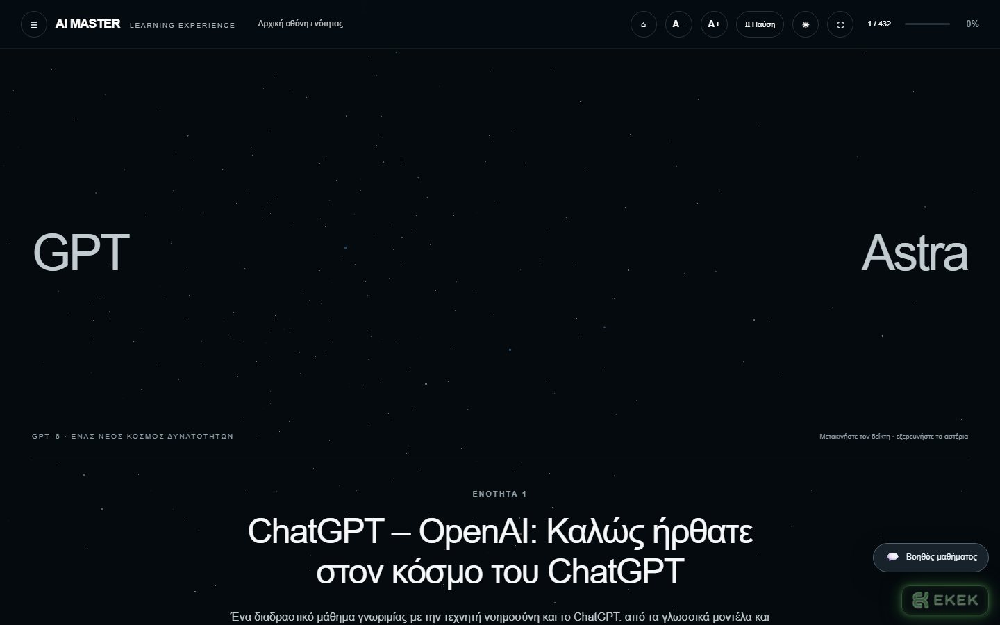
        <figcaption>Ενότητα 1 · ChatGPT — αρχική οθόνη, WebGL αστρικό πεδίο + Canvas σήμα</figcaption>
      </figure>

      <div class="strip">
        <figure class="shot">
          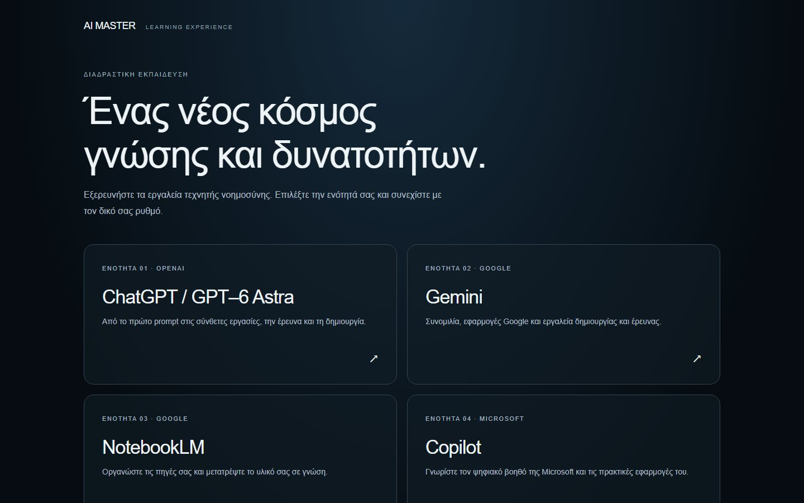
          <figcaption>Επιλογή ενότητας · SpotlightCard</figcaption>
        </figure>
        <figure class="shot">
          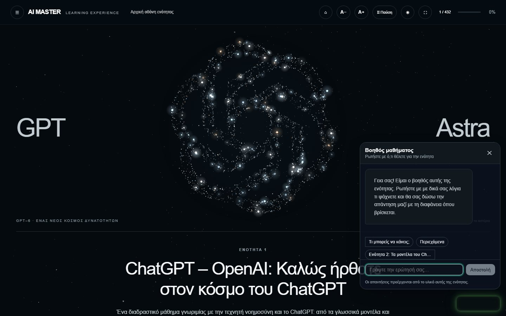
          <figcaption>Τοπικός βοηθός · shadcn/ui σε καθαρό CSS</figcaption>
        </figure>
        <figure class="shot">
          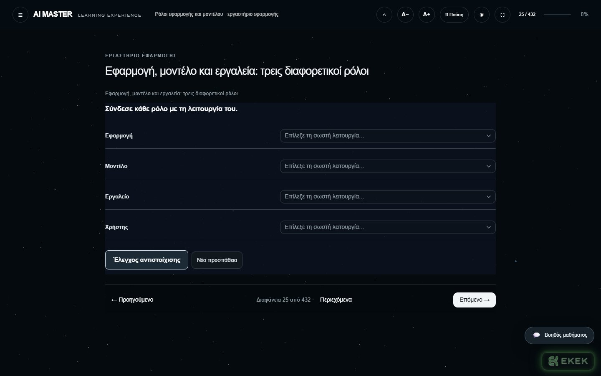
          <figcaption>Εργαστήριο εφαρμογής · άσκηση αντιστοίχισης</figcaption>
        </figure>
      </div>

      <dl class="spec">
        <div><dt>Πρότυπο</dt><dd>SCORM 1.2</dd></div>
        <div><dt>Ενότητες</dt><dd>4</dd></div>
        <div><dt>Διαφάνειες</dt><dd>432 / 92 / 43 / 76</dd></div>
        <div><dt>Θέματα</dt><dd>dark + light</dd></div>
        <div><dt>Εξαρτήσεις</dt><dd>0 εξωτερικές</dd></div>
      </dl>

      <ul class="feat">
        <li><b>Τοπικός βοηθός μαθήματος.</b> Απαντά από το περιεχόμενο της ίδιας της ενότητας και παραπέμπει στη διαφάνεια όπου βρίσκεται η απάντηση. Τρέχει εξ ολοκλήρου στον browser — καμία κλήση σε υπηρεσία AI, κανένα κόστος ανά χρήστη.</li>
        <li><b>Στοιχεία διεπαφής shadcn/ui.</b> Message scroller, bubbles, select και button groups αποδοσμένα σε καθαρό CSS και JavaScript, χωρίς React και χωρίς Tailwind, με τη γεωμετρία των επίσημων components.</li>
        <li><b>Προσβασιμότητα και έλεγχος κίνησης.</b> Κουμπί παύσης που αποθηκεύεται στον browser, σεβασμός του <em>prefers-reduced-motion</em>, μεγέθυνση κειμένου, και αυτόματο σταμάτημα της κίνησης όταν η καρτέλα δεν είναι ορατή.</li>
        <li><b>Τοπικά βίντεο και αρχεία λήψης.</b> Ενσωματωμένα MP4 με posters, μαζί με αρχεία Blender και CSV που κατεβάζει ο εκπαιδευόμενος μέσα από το μάθημα.</li>
        <li><b>Καθαρή αδειοδότηση.</b> Κάθε πακέτο μεταφέρει τα δικά του <em>DEPENDENCY-LICENSES</em>, <em>THIRD-PARTY-NOTICES</em> και την άδεια του React Bits.</li>
      </ul>
      <p class="note">Οι ενότητες Gemini, NotebookLM και Copilot μοιράζονται το ίδιο σύστημα με σπειροειδές αστρικό εφέ αντί για το πλεγμένο σήμα.</p>

      <div class="strip" style="margin-top:18px">
        <figure class="shot">
          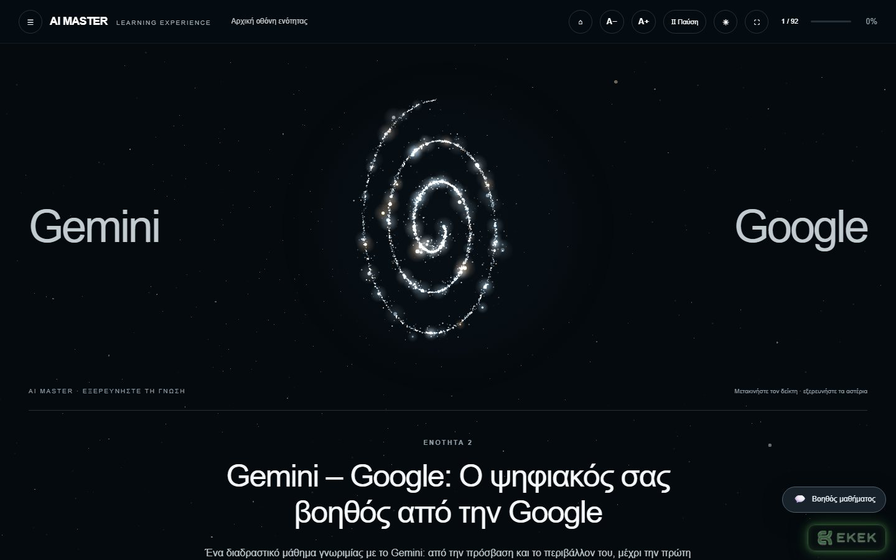
          <figcaption>Ενότητα 2 · Gemini — 92 διαφάνειες</figcaption>
        </figure>
        <figure class="shot">
          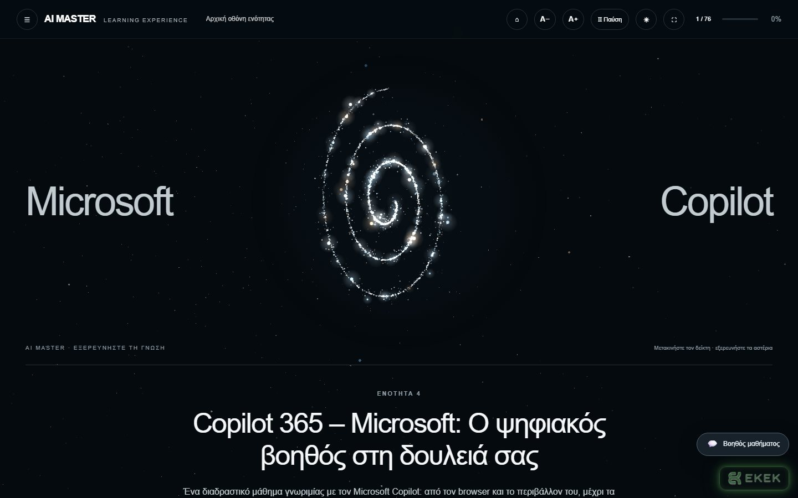
          <figcaption>Ενότητα 4 · Copilot — 76 διαφάνειες</figcaption>
        </figure>
        <figure class="shot">
          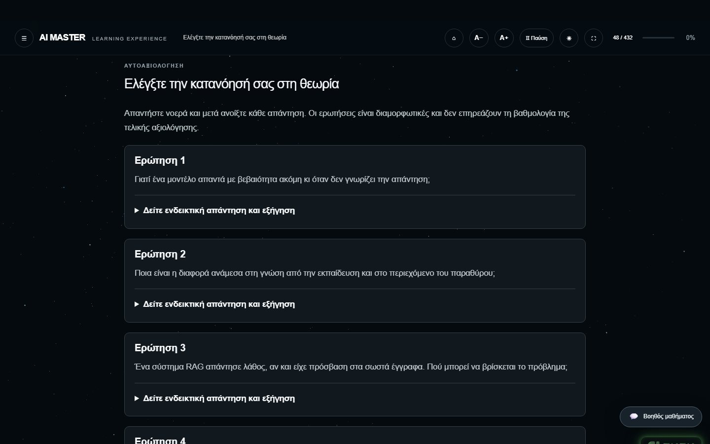
          <figcaption>Αυτοαξιολόγηση · αναδιπλούμενες λύσεις</figcaption>
        </figure>
      </div>
    </article>

    <!-- ---------- PLATE: AI MANAGER ---------- -->
    <article class="plate">
      <p class="plate-code"><b>AIManager_v2_Ενότητα-6_SCORM12</b> · Σειρά 6 ενοτήτων</p>
      <h3>AI MANAGER</h3>
      <p>
        Η πιο ογκώδης σειρά του χαρτοφυλακίου: μία μόνο ενότητα φτάνει τις 720 διαφάνειες.
        Το βάρος το σηκώνει η πλοήγηση — ιεραρχικά περιεχόμενα με μετρητή διαφανειών ανά
        κεφάλαιο, ώστε ο εκπαιδευόμενος να ξέρει πάντα πόσο απομένει.
      </p>

      <p class="open-row">
        <span class="lbl">Άνοιγμα</span>
        <a class="primary" href="demo/02-ai-manager/%CE%95%CE%BD%CF%8C%CF%84%CE%B7%CF%84%CE%B1%206/index.html">Ενότητα 6 · 720 διαφάνειες</a>
        <a href="demo/02-ai-manager/%CE%95%CE%BD%CF%8C%CF%84%CE%B7%CF%84%CE%B1%201/index.html">Ενότητα 1</a>
        <a href="demo/02-ai-manager/%CE%95%CE%BD%CF%8C%CF%84%CE%B7%CF%84%CE%B1%202/index.html">2</a>
        <a href="demo/02-ai-manager/%CE%95%CE%BD%CF%8C%CF%84%CE%B7%CF%84%CE%B1%203/index.html">3</a>
        <a href="demo/02-ai-manager/%CE%95%CE%BD%CF%8C%CF%84%CE%B7%CF%84%CE%B1%204/index.html">4</a>
        <a href="demo/02-ai-manager/%CE%95%CE%BD%CF%8C%CF%84%CE%B7%CF%84%CE%B1%205/index.html">5</a>
      </p>
      <figure class="shot">
        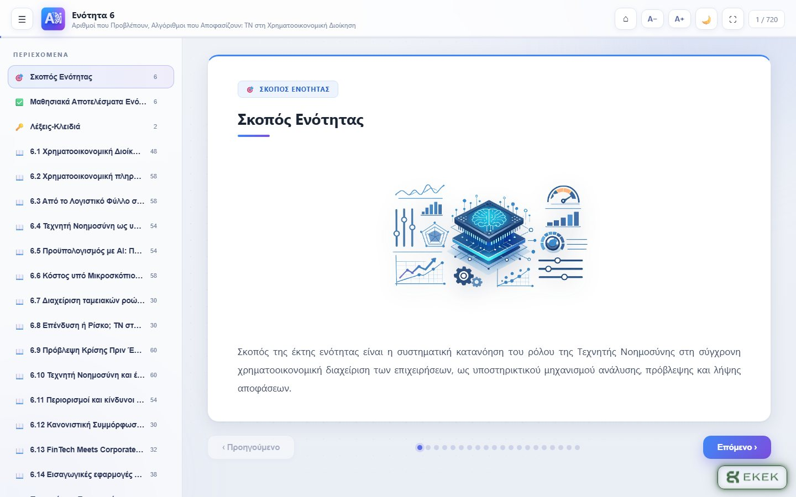
        <figcaption>Ενότητα 6 · ΤΝ στη Χρηματοοικονομική Διοίκηση — 720 διαφάνειες</figcaption>
      </figure>
      <dl class="spec">
        <div><dt>Πρότυπο</dt><dd>SCORM 1.2</dd></div>
        <div><dt>Ενότητες</dt><dd>6</dd></div>
        <div><dt>Εκδόσεις</dt><dd>v1 + v2</dd></div>
        <div><dt>Πρόοδος</dt><dd>localStorage</dd></div>
      </dl>
      <ul class="feat">
        <li><b>Περιεχόμενα με μετρητές.</b> Κάθε κεφάλαιο δείχνει το πλήθος των διαφανειών του· η ενεργή θέση παραμένει ορατή στη λίστα.</li>
        <li><b>Εναλλαγή φωτεινού και σκοτεινού θέματος</b> από τη γραμμή εργαλείων, μαζί με μεγέθυνση κειμένου και πλήρη οθόνη.</li>
        <li><b>Ανατροφοδότηση επιτυχίας</b> με διακριτικό εφέ ολοκλήρωσης στις ασκήσεις.</li>
      </ul>
    </article>

    <!-- ---------- PLATE: AI GOV ---------- -->
    <article class="plate">
      <p class="plate-code"><b>AIGov_v2_enotita-1_SCORM12</b> · Σειρά 6 ενοτήτων</p>
      <h3>Τεχνητή Νοημοσύνη στον Δημόσιο Τομέα</h3>
      <p>
        Θεσμικό ύφος για θεσμικό κοινό. Ήρεμη παλέτα, καθαρή τυπογραφία και πρωτότυπη
        διανυσματική εικονογράφηση σε SVG αντί για stock φωτογραφίες — υλικό που αντέχει
        να προβληθεί σε αίθουσα υπουργείου.
      </p>

      <p class="open-row">
        <span class="lbl">Άνοιγμα</span>
        <a class="primary" href="demo/03-dimosio-tomeas/enotita-1/index.html">Ενότητα 1</a>
        <a href="demo/03-dimosio-tomeas/enotita-2/index.html">2</a>
        <a href="demo/03-dimosio-tomeas/enotita-3/index.html">3</a>
        <a href="demo/03-dimosio-tomeas/enotita-4/index.html">4</a>
        <a href="demo/03-dimosio-tomeas/enotita-5/index.html">5</a>
        <a href="demo/03-dimosio-tomeas/enotita-6/index.html">6</a>
      </p>
      <figure class="shot">
        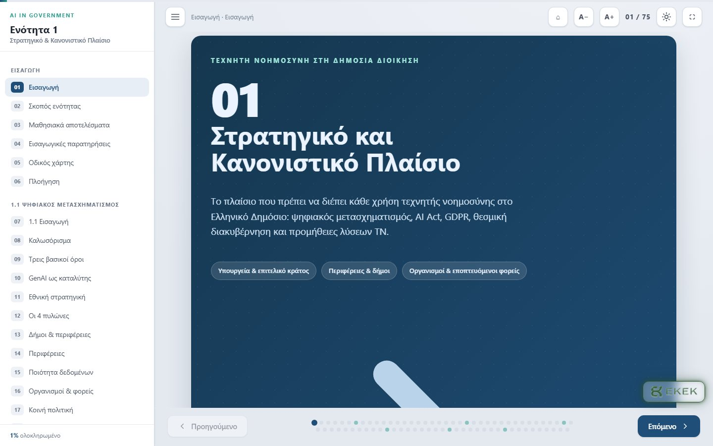
        <figcaption>Ενότητα 1 · Στρατηγικό &amp; Κανονιστικό Πλαίσιο — 75 διαφάνειες</figcaption>
      </figure>
      <dl class="spec">
        <div><dt>Πρότυπο</dt><dd>SCORM 1.2</dd></div>
        <div><dt>Ενότητες</dt><dd>6</dd></div>
        <div><dt>Διαφάνειες Ε1</dt><dd>75</dd></div>
        <div><dt>Εικονογράφηση</dt><dd>SVG, πρωτότυπη</dd></div>
      </dl>
      <ul class="feat">
        <li><b>Δείκτης προόδου ανά ενότητα</b> στο κάτω μέρος, με χρωματική διάκριση των κεφαλαίων που έχουν ολοκληρωθεί.</li>
        <li><b>Ομαδοποιημένα περιεχόμενα</b> (Εισαγωγή, υποενότητες 1.1, 1.2 …) που αντιστοιχούν ένα προς ένα στη δομή της ύλης.</li>
        <li><b>Κάρτες στοχοθεσίας και ρόλων</b> — «Υπουργεία», «Περιφέρειες &amp; δήμοι», «Εποπτευόμενοι φορείς» — ώστε κάθε ομάδα να βρίσκει αμέσως τι την αφορά.</li>
      </ul>
    </article>

    <!-- ---------- PLATE: CLAUDE ---------- -->
    <article class="plate">
      <p class="plate-code"><b>CLAUDE_v2_enotita_1_SCORM12</b> · Σειρά 4 ενοτήτων</p>
      <h3>Claude AI</h3>
      <p>
        Σκοτεινό θέμα με θερμή, χάλκινη παλέτα δανεισμένη από την ταυτότητα του ίδιου του
        εργαλείου που διδάσκει. Η αρχική οθόνη κάθε ενότητας δηλώνει σκοπό και μαθησιακούς
        στόχους πριν ο εκπαιδευόμενος πατήσει έναρξη.
      </p>

      <p class="open-row">
        <span class="lbl">Άνοιγμα</span>
        <a class="primary" href="demo/04-claude-ai/enotita_1/index.html">Ενότητα 1</a>
        <a href="demo/04-claude-ai/enotita_2/index.html">2</a>
        <a href="demo/04-claude-ai/enotita_3/index.html">3</a>
        <a href="demo/04-claude-ai/enotita_4/index.html">4</a>
      </p>
      <figure class="shot">
        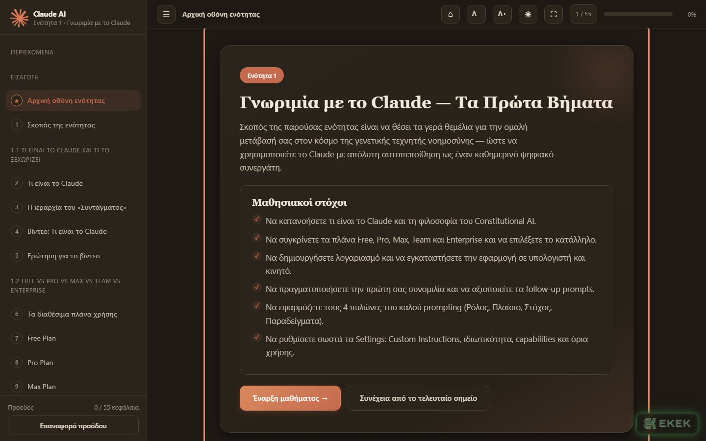
        <figcaption>Ενότητα 1 · Γνωριμία με το Claude — 55 κεφάλαια</figcaption>
      </figure>
      <dl class="spec">
        <div><dt>Πρότυπο</dt><dd>SCORM 1.2</dd></div>
        <div><dt>Ενότητες</dt><dd>4</dd></div>
        <div><dt>Κεφάλαια Ε1</dt><dd>55</dd></div>
        <div><dt>Συνέχεια</dt><dd>bookmark</dd></div>
      </dl>
      <ul class="feat">
        <li><b>«Συνέχεια από το τελευταίο σημείο».</b> Ξεχωριστό κουμπί δίπλα στην έναρξη — ο εκπαιδευόμενος επιστρέφει ακριβώς εκεί που σταμάτησε, είτε μέσα από το LMS είτε τοπικά.</li>
        <li><b>Επαναφορά προόδου</b> από τη βάση των περιεχομένων, για όποιον θέλει να ξεκινήσει καθαρά.</li>
        <li><b>Μαθησιακοί στόχοι σε κάθε ενότητα</b>, διατυπωμένοι ως ελέγξιμα αποτελέσματα.</li>
      </ul>
    </article>

    <!-- ---------- PLATE: YGEIA ---------- -->
    <article class="plate">
      <p class="plate-code"><b>TN-Ygeia-v2-enotita1_SCORM12</b> · Σειρά 6 ενοτήτων + κεντρική πύλη</p>
      <h3>Τεχνητή Νοημοσύνη στην Υγεία</h3>
      <p>
        Εδώ το παραδοτέο δεν είναι μόνο οι ενότητες αλλά και μια κεντρική πύλη που τις
        συγκεντρώνει: κάρτα ανά ενότητα, με περιγραφή, πλήθος διαφανειών και ατομική
        μπάρα προόδου που ενημερώνεται καθώς ο εκπαιδευόμενος προχωρά.
      </p>

      <p class="open-row">
        <span class="lbl">Άνοιγμα</span>
        <a class="primary" href="demo/05-ygeia/index.html">Κεντρική πύλη</a>
        <a href="demo/05-ygeia/enotita1.html">Ενότητα 1</a>
        <a href="demo/05-ygeia/enotita2.html">2</a>
        <a href="demo/05-ygeia/enotita3.html">3</a>
        <a href="demo/05-ygeia/enotita4.html">4</a>
        <a href="demo/05-ygeia/enotita5.html">5</a>
        <a href="demo/05-ygeia/enotita6.html">6</a>
      </p>
      <div class="strip">
        <figure class="shot">
          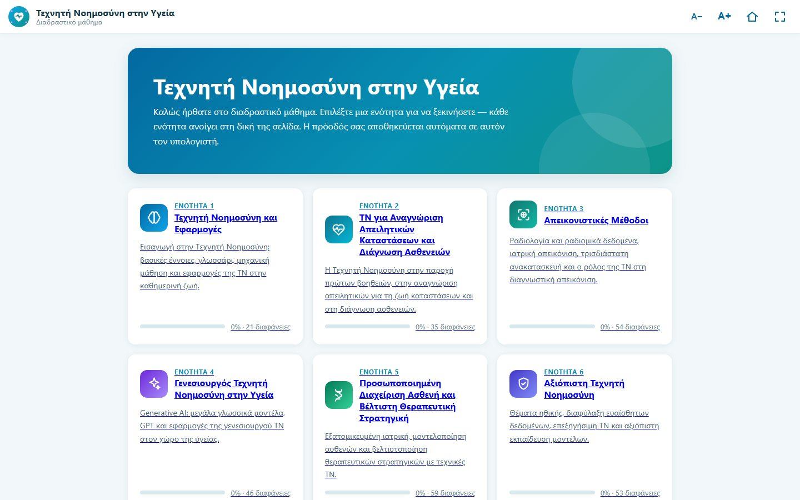
          <figcaption>Κεντρική πύλη · 6 ενότητες, 21–59 διαφάνειες η καθεμία</figcaption>
        </figure>
        <figure class="shot">
          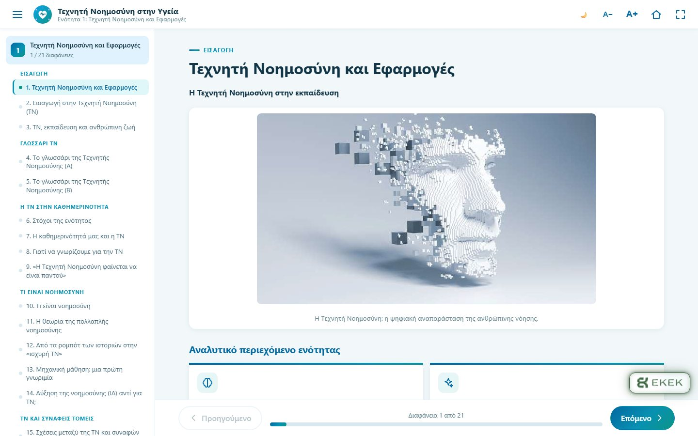
          <figcaption>Ενότητα 1 · ΤΝ και Εφαρμογές — 21 διαφάνειες</figcaption>
        </figure>
      </div>
      <dl class="spec">
        <div><dt>Πρότυπο</dt><dd>SCORM 1.2</dd></div>
        <div><dt>Ενότητες</dt><dd>6</dd></div>
        <div><dt>Διαφάνειες</dt><dd>21 · 35 · 54 · 46 · 59 · 53</dd></div>
        <div><dt>Εκδόσεις</dt><dd>v1 + v2</dd></div>
      </dl>
      <ul class="feat">
        <li><b>Γλωσσάρι ορολογίας</b> ενσωματωμένο στα περιεχόμενα, ως ξεχωριστή θεματική ομάδα.</li>
        <li><b>Λεζάντες και τεκμηρίωση</b> κάτω από κάθε εικόνα — προϋπόθεση για εκπαιδευτικό υλικό που ελέγχεται.</li>
        <li><b>Αυτόματη αποθήκευση προόδου</b> ανά ενότητα, ορατή από την κεντρική πύλη.</li>
      </ul>
    </article>

    <!-- ---------- PLATE: QUIZ ---------- -->
    <article class="plate">
      <p class="plate-code"><b>enotita-1_scorm2004_4th</b> · Μηχανή αξιολόγησης</p>
      <h3>Quiz με χρονομέτρηση και αυτόματη υποβολή</h3>
      <p>
        Ξεχωριστά SCORM πακέτα αξιολόγησης, χτισμένα σε SCORM 2004 4th Edition ώστε να
        περνούν βαθμό και κατάσταση ολοκλήρωσης πίσω στο LMS. Ο χρόνος μετρά αντίστροφα
        σε εμφανές σημείο και η υποβολή γίνεται αυτόματα μόλις εξαντληθεί.
      </p>

      <p class="open-row">
        <span class="lbl">Άνοιγμα</span>
        <a class="primary" href="demo/06-quiz/index.html">Quiz Ενότητας 1</a>
      </p>
      <figure class="shot">
        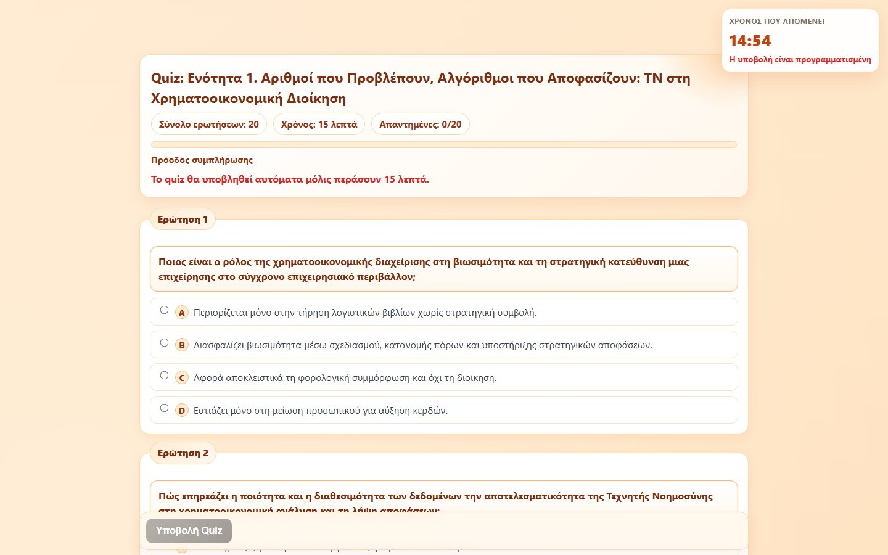
        <figcaption>Ενότητα 1 · 20 ερωτήσεις, 15 λεπτά, προγραμματισμένη υποβολή</figcaption>
      </figure>
      <dl class="spec">
        <div><dt>Πρότυπο</dt><dd>SCORM 2004 4th</dd></div>
        <div><dt>Sequencing</dt><dd>imsss, tracked</dd></div>
        <div><dt>Ερωτήσεις</dt><dd>20</dd></div>
        <div><dt>Χρόνος</dt><dd>15 λεπτά</dd></div>
      </dl>
      <ul class="feat">
        <li><b>Αυτόματη υποβολή στη λήξη του χρόνου</b>, με προειδοποίηση στον εκπαιδευόμενο από την αρχή.</li>
        <li><b>Μετρητής απαντημένων</b> (0/20) και μπάρα συμπλήρωσης, ώστε να μη μένει ερώτηση αναπάντητη κατά λάθος.</li>
        <li><b>Πλήρες σχήμα SCORM 2004</b> με τα XSD μέσα στο πακέτο και <code>completionSetByContent</code>, για LMS που το απαιτούν.</li>
      </ul>
    </article>

  </div>
</section>

<!-- ================= OER ================= -->
<section id="oer">
  <div class="wrap">
    <div class="section-head">
      <h2>Ψηφιοποίηση OER</h2>
      <span class="count">52 μαθήματα · μία παραγωγή</span>
    </div>

    <article class="plate">
      <p class="plate-code"><b>Ανοικτοί Εκπαιδευτικοί Πόροι</b> · Αυτόνομα μονοαρχεία HTML</p>
      <h3>Ένα μάθημα, ένα αρχείο</h3>
      <p>
        Πενήντα δύο εκπαιδευτικά αντικείμενα — από αρχαία ελληνικά και γαλλικά μέχρι
        θερμικές εγκαταστάσεις και μηχανολογικό σχέδιο — μετατράπηκαν σε αυτόνομα
        διαδραστικά μαθήματα. Κάθε μάθημα είναι <em>ένα</em> αρχείο HTML με τις εικόνες
        ενσωματωμένες: ανοίγει με διπλό κλικ, ανεβαίνει σε οποιαδήποτε πλατφόρμα,
        δεν χαλάει αν μετακινηθεί.
      </p>

      <p class="open-row">
        <span class="lbl">Άνοιγμα</span>
        <a class="primary" href="demo/07-oer/index.html">Κατάλογος 52 μαθημάτων</a>
        <a href="demo/07-oer/I_dynami_tis_eikonas.html">Η δύναμη της εικόνας</a>
        <a href="demo/07-oer/TechWords_Challenge.html">TechWords Challenge</a>
        <a href="demo/07-oer/Katigoros_enantion_Katigoroumenou.html">Κατήγορος εναντίον κατηγορουμένου</a>
      </p>

      <div class="strip">
        <figure class="shot">
          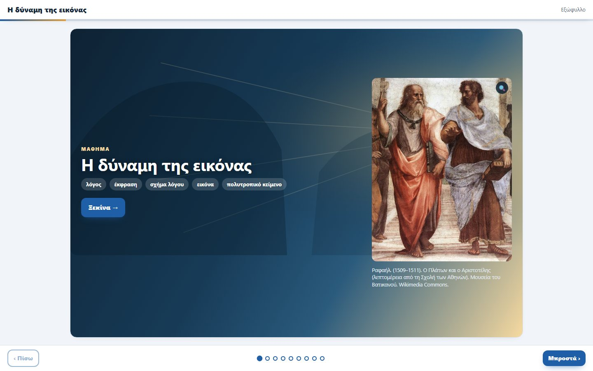
          <figcaption>Η δύναμη της εικόνας · Λογοτεχνία</figcaption>
        </figure>
        <figure class="shot">
          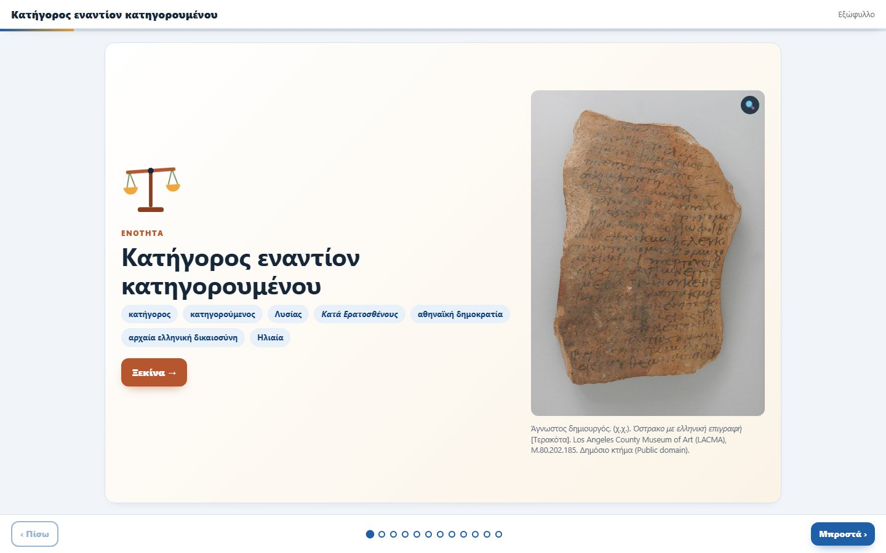
          <figcaption>Κατήγορος εναντίον κατηγορουμένου · Αρχαία</figcaption>
        </figure>
        <figure class="shot">
          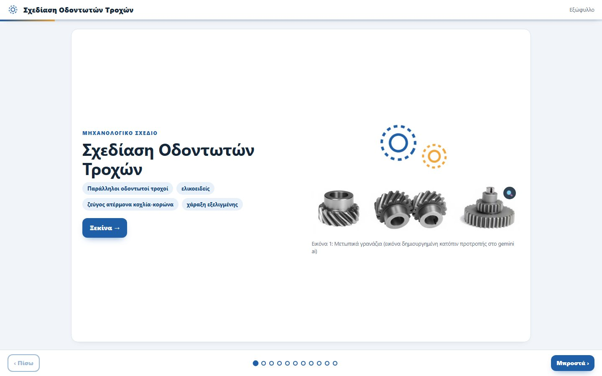
          <figcaption>Σχεδίαση οδοντωτών τροχών · Μηχανολογία</figcaption>
        </figure>
      </div>

      <figure class="shot">
        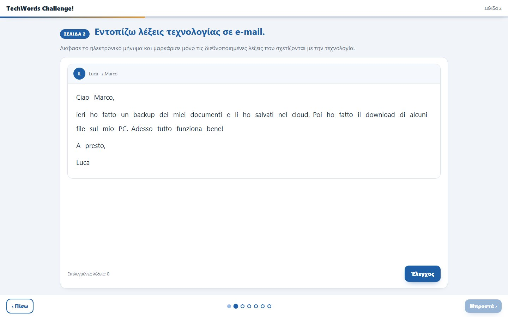
        <figcaption>Άσκηση επιλογής λέξεων μέσα σε αυθεντικό κείμενο · TechWords Challenge (Ιταλικά)</figcaption>
      </figure>

      <dl class="spec">
        <div><dt>Παραδοτέα</dt><dd>52 μαθήματα</dd></div>
        <div><dt>Μορφή</dt><dd>1 αρχείο .html</dd></div>
        <div><dt>Εύρος</dt><dd>31 KB – 2.5 MB</dd></div>
        <div><dt>Έλεγχος</dt><dd>αυτοματοποιημένος</dd></div>
      </dl>

      <ul class="feat">
        <li><b>Ασκήσεις που ταιριάζουν στο μάθημα,</b> όχι ένα τυποποιημένο quiz: επιλογή λέξεων μέσα σε κείμενο, αντιστοίχιση, μεταφορά στοιχείων, συμπλήρωση κενών — με κατώφλι επιτυχίας πριν προχωρήσει ο μαθητής.</li>
        <li><b>Κάθε εικόνα τεκμηριωμένη.</b> Δημιουργός, χρονολογία, συλλογή και καθεστώς δικαιωμάτων κάτω από κάθε οπτικό τεκμήριο· lightbox για μεγέθυνση και alt κείμενο παντού.</li>
        <li><b>Αυτοματοποιημένος ποιοτικός έλεγχος.</b> Και τα 52 μαθήματα πέρασαν έλεγχο με Playwright: μηδέν σφάλματα κονσόλας, μηδέν οριζόντια κύλιση και μηδέν κύλιση σελίδας σε 1366×768 και 390×780.</li>
        <li><b>Καθαρά από εσωτερικούς κωδικούς.</b> Κανένας κωδικός OER δεν διαρρέει στο περιεχόμενο που βλέπει ο εκπαιδευόμενος.</li>
      </ul>
    </article>
  </div>
</section>

<!-- ================= ΑΣΚΗΣΕΙΣ ================= -->
<section id="askiseis">
  <div class="wrap">
    <div class="section-head">
      <h2>Τύποι ασκήσεων</h2>
      <span class="count">144 μαθήματα · 11 μηχανισμοί</span>
    </div>

    <article class="plate">
      <p class="plate-code"><b>Διαδραστικότητα</b> · Ένας μηχανισμός ανά μαθησιακό στόχο</p>
      <h3>Η άσκηση προκύπτει από το μάθημα, όχι από πρότυπο</h3>
      <p>
        Κάθε αντικείμενο ζητά διαφορετικό είδος εξάσκησης. Ένα λεξιλόγιο ξένης γλώσσας
        θέλει σταυρόλεξο και ακουστική αναγνώριση· μια τεχνική έννοια θέλει διάγραμμα
        με σωστό ή λάθος· μια κοινωνική δεξιότητα θέλει κατηγοριοποίηση περιστατικών.
        Οι μηχανισμοί γράφονται από την αρχή για κάθε μάθημα — δεν υπάρχει ενιαίο
        πρότυπο κουίζ που επαναχρησιμοποιείται παντού.
      </p>

      <div class="strip">
        <figure class="shot">
          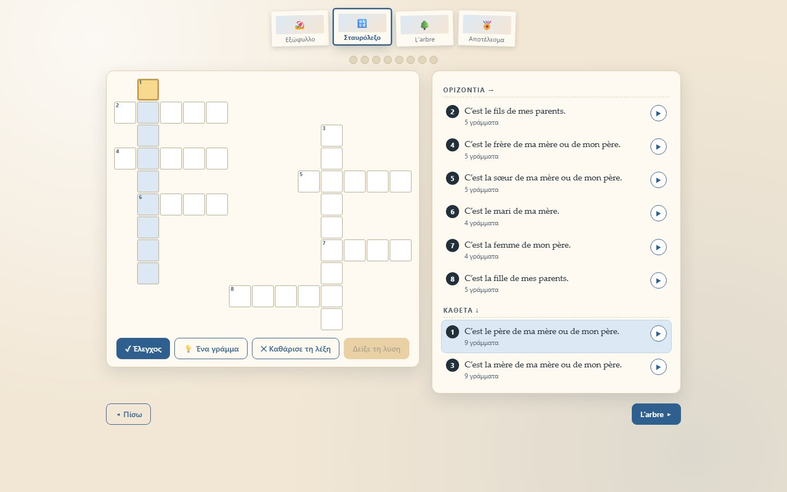
          <figcaption>Σταυρόλεξο με εκφώνηση · La famille (Γαλλικά)</figcaption>
        </figure>
        <figure class="shot">
          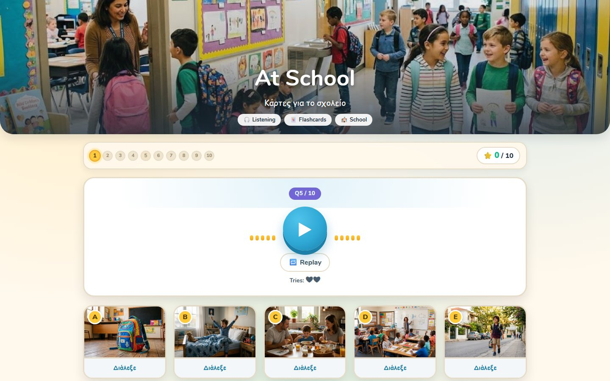
          <figcaption>Ακρόαση &amp; κάρτες · At School (Αγγλικά)</figcaption>
        </figure>
        <figure class="shot">
          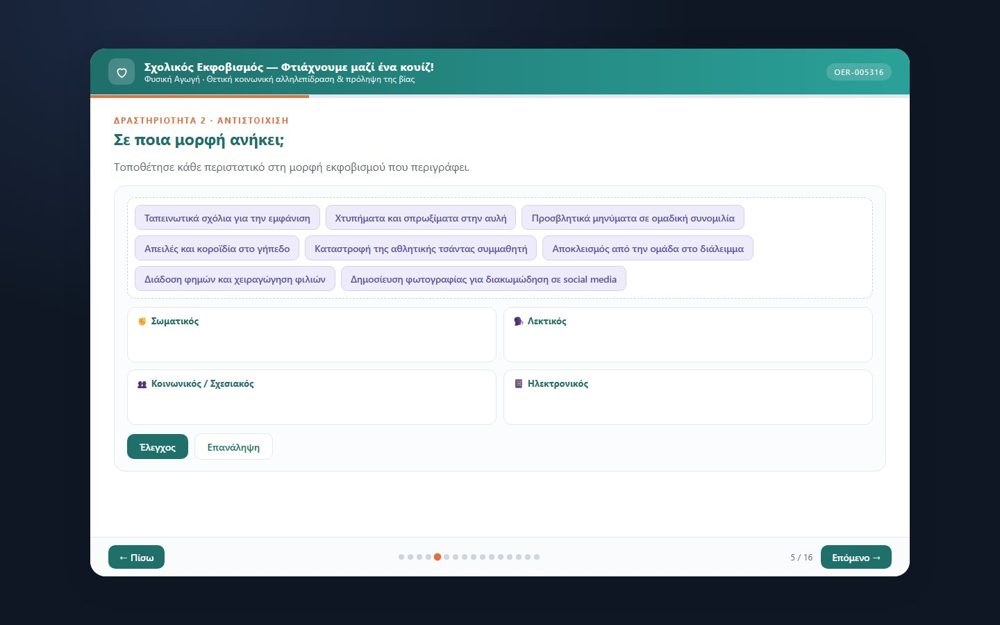
          <figcaption>Μεταφορά &amp; κατηγοριοποίηση · Σχολικός εκφοβισμός</figcaption>
        </figure>
      </div>

      <div class="strip">
        <figure class="shot">
          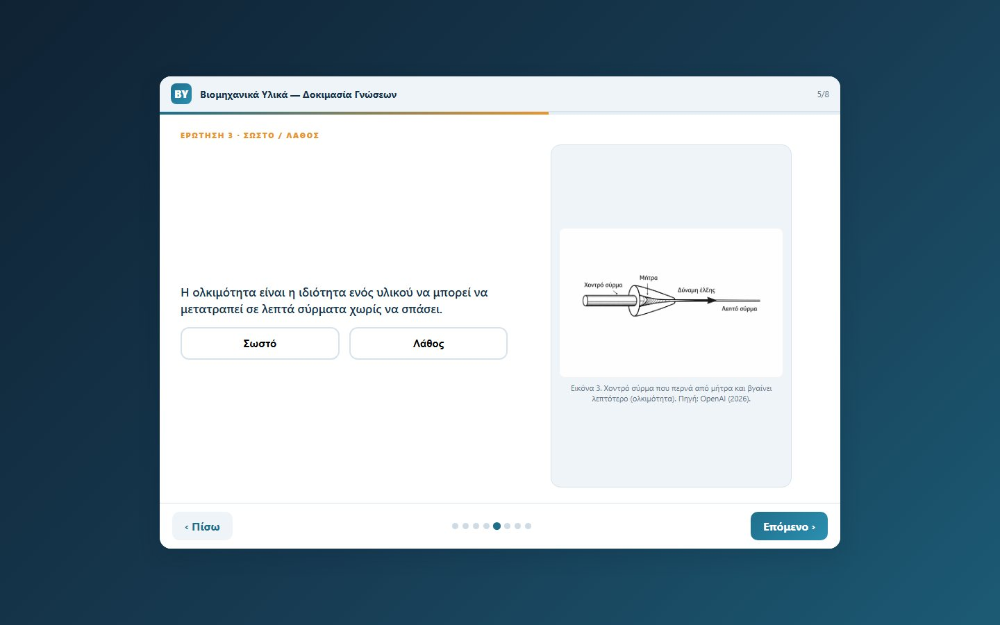
          <figcaption>Σωστό / Λάθος με διάγραμμα · Βιομηχανικά υλικά</figcaption>
        </figure>
        <figure class="shot">
          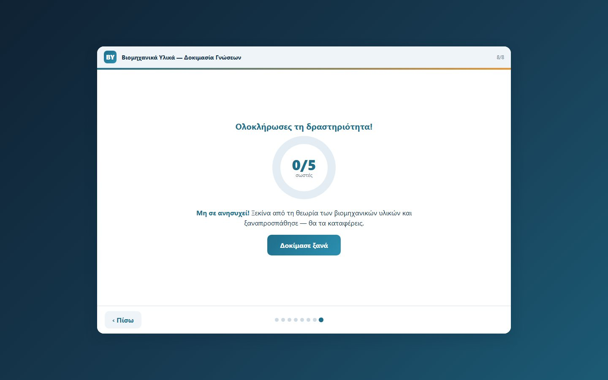
          <figcaption>Βαθμολόγηση &amp; επανάληψη · Βιομηχανικά υλικά</figcaption>
        </figure>
        <figure class="shot">
          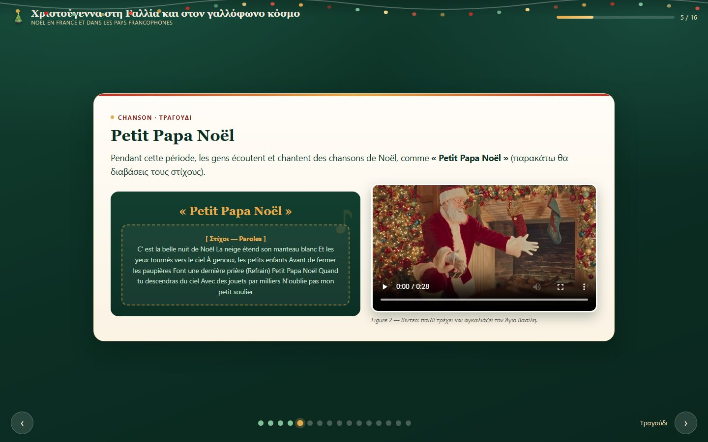
          <figcaption>Στίχοι με κενά + βίντεο · Noël en France</figcaption>
        </figure>
      </div>

      <dl class="spec">
        <div><dt>Μαθήματα</dt><dd>144</dd></div>
        <div><dt>Μηχανισμοί</dt><dd>11 τύποι</dd></div>
        <div><dt>Μορφή</dt><dd>1 αρχείο .html</dd></div>
        <div><dt>Γλώσσες</dt><dd>EL · EN · FR · IT</dd></div>
        <div><dt>Εξαρτήσεις</dt><dd>0 εξωτερικές</dd></div>
      </dl>

      <ul class="feat">
        <li><b>Σταυρόλεξο με ηχητική εκφώνηση.</b> Κάθε ορισμός έχει δικό του κουμπί αναπαραγωγής, ώστε η άσκηση να λειτουργεί και ως κατανόηση προφορικού λόγου. Βοήθειες κλιμακωτές: ένα γράμμα, καθάρισμα λέξης, εμφάνιση λύσης.</li>
        <li><b>Μεταφορά και απόθεση σε κατηγορίες.</b> Ο εκπαιδευόμενος ταξινομεί πραγματικά περιστατικά σε μορφές εκφοβισμού και ελέγχει τη λύση του.</li>
        <li><b>Ακουστική αναγνώριση με σκορ και ζωές.</b> Δέκα ερωτήματα, τρεις προσπάθειες ανά ερώτημα, ορατός μετρητής επιτυχίας.</li>
        <li><b>Διαγράμματα δίπλα στην ερώτηση.</b> Στα τεχνικά αντικείμενα η εικόνα δεν είναι διακοσμητική — είναι το τεκμήριο πάνω στο οποίο απαντά ο εκπαιδευόμενος, με πλήρη αναφορά πηγής.</li>
        <li><b>Κλειστό σύστημα.</b> Ήχος, εικόνες και βίντεο ενσωματωμένα στο ίδιο αρχείο· η άσκηση δουλεύει χωρίς σύνδεση.</li>
      </ul>

      <p class="open-row">
        <span class="lbl">Άνοιγμα</span>
        <a class="primary" href="demo/09-askiseis/index.html">Κατάλογος 144 ασκήσεων</a>
        <a href="demo/09-askiseis/la-famille.html">Σταυρόλεξο · La famille</a>
        <a href="demo/09-askiseis/at-school-flashcards.html">At School</a>
        <a href="demo/09-askiseis/sxolikos-ekfovismos.html">Σχολικός εκφοβισμός</a>
        <a href="demo/09-askiseis/viomichanika-ylika.html">Βιομηχανικά υλικά</a>
        <a href="demo/09-askiseis/noel-en-france.html">Noël en France</a>
      </p>

      <p class="note">
        Ο κατάλογος περιλαμβάνει και τα 144 μαθήματα, με φίλτρα ανά τύπο άσκησης και
        αναζήτηση με τίτλο ή κωδικό OER. Ακολουθεί δείγμα από τα αντικείμενα με
        βαρύτερο οπτικό υλικό: ανατομία, δορυφορική ναυτιλία και αεροναυπηγική.
      </p>

      <div class="strip" style="margin-top:18px">
        <figure class="shot">
          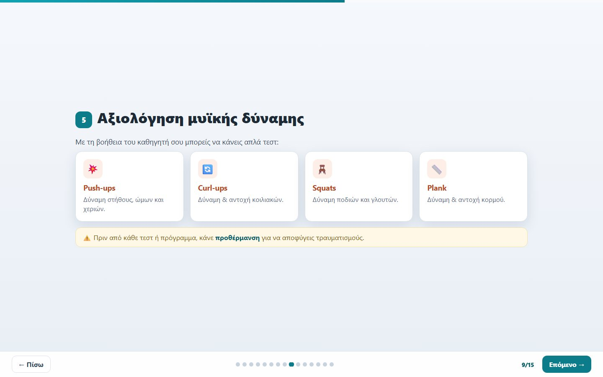
          <figcaption>Μυϊκές ομάδες · Φυσική αγωγή</figcaption>
        </figure>
        <figure class="shot">
          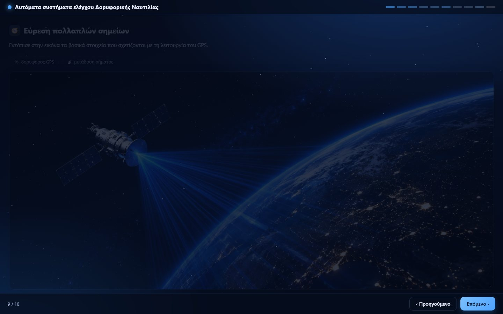
          <figcaption>Δορυφορική ναυτιλία · Ναυτικές σπουδές</figcaption>
        </figure>
        <figure class="shot">
          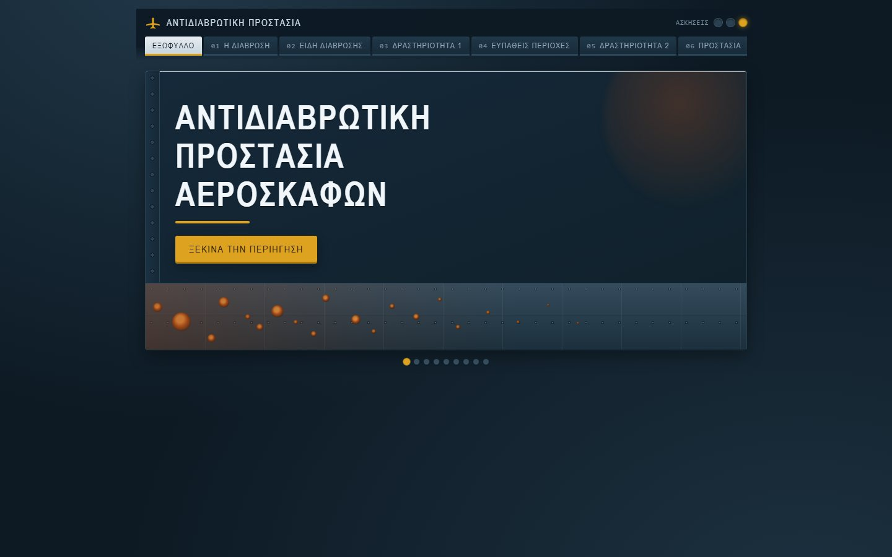
          <figcaption>Αντιδιαβρωτική προστασία · Αεροναυπηγική</figcaption>
        </figure>
      </div>

      <p class="open-row">
        <span class="lbl">Άνοιγμα</span>
        <a href="demo/09-askiseis/myikes-omades.html">Μυϊκές ομάδες</a>
        <a href="demo/09-askiseis/doryforiki-naftilia.html">Δορυφορική ναυτιλία</a>
        <a href="demo/09-askiseis/antidiavrotiki-prostasia.html">Αντιδιαβρωτική προστασία</a>
        <a href="demo/09-askiseis/diaforiko-torsen.html">Διαφορικό Torsen</a>
        <a href="demo/09-askiseis/interview-with-a-star.html">Interview With A Star</a>
      </p>
    </article>
  </div>
</section>

<!-- ================= ΤΕΧΝΙΚΑ ================= -->
<section id="techniko">
  <div class="wrap">
    <div class="section-head">
      <h2>Τεχνικά χαρακτηριστικά</h2>
      <span class="count">Τι μπαίνει σε κάθε πακέτο</span>
    </div>

    <div class="tech-grid">
      <div>
        <h4>Συμβατότητα LMS</h4>
        <p>Πακέτα SCORM 1.2 για το σώμα των μαθημάτων και SCORM 2004 4th Edition όπου χρειάζεται βαθμολόγηση με sequencing.</p>
        <ul>
          <li><span>Κατάσταση</span><code>cmi.core.lesson_status</code></li>
          <li><span>Σελιδοδείκτης</span><code>cmi.core.lesson_location</code></li>
          <li><span>Συνέχιση</span><code>cmi.suspend_data</code></li>
          <li><span>Χρόνος</span><code>cmi.core.session_time</code></li>
        </ul>
        <p style="margin-top:12px">Το manifest δηλώνει ονομαστικά κάθε αρχείο του πακέτου — τίποτα δεν λείπει κατά την εισαγωγή.</p>
      </div>

      <div>
        <h4>Χωρίς εξαρτήσεις</h4>
        <p>Καμία κλήση σε CDN, καμία συνδρομή σε authoring tool, κανένα API κλειδί. Ό,τι χρειάζεται το μάθημα ταξιδεύει μέσα στο zip.</p>
        <ul>
          <li><span>Βιβλιοθήκες</span>React, ReactDOM, OGL — πακεταρισμένες τοπικά</li>
          <li><span>Βίντεο</span>τοπικά MP4 με poster frames</li>
          <li><span>Γραμματοσειρές</span>ενσωματωμένες ή του συστήματος</li>
          <li><span>Άδειες</span>notices μέσα σε κάθε πακέτο</li>
        </ul>
      </div>

      <div>
        <h4>Εμπειρία χρήσης</h4>
        <p>Το ίδιο μάθημα δουλεύει σε υπολογιστή, tablet και κινητό, χωρίς οριζόντια κύλιση στα πλάτη που ελέγχθηκαν.</p>
        <ul>
          <li><span>Θέματα</span>σκοτεινό και φωτεινό, με απομνημόνευση επιλογής</li>
          <li><span>Τυπογραφία</span>μεγέθυνση κειμένου σε τρία βήματα</li>
          <li><span>Κίνηση</span>παύση με ένα κουμπί, σεβασμός prefers-reduced-motion</li>
          <li><span>Πρόοδος</span>αποθήκευση τοπικά και μέσω του LMS</li>
        </ul>
      </div>

      <div>
        <h4>Παραγωγή και έλεγχος</h4>
        <p>Κάθε παράδοση συνοδεύεται από γραπτό έλεγχο: τι δοκιμάστηκε, σε ποιες αναλύσεις, και τι δεν δοκιμάστηκε.</p>
        <ul>
          <li><span>Ακεραιότητα</span>σύγκριση byte-προς-byte με τα αρχικά κεφάλαια</li>
          <li><span>Manifests</span>επαλήθευση ότι κάθε αναφορά αντιστοιχεί σε υπαρκτό αρχείο</li>
          <li><span>Browser</span>φόρτωση και έναρξη χωρίς σφάλματα JavaScript</li>
          <li><span>Αντίγραφα</span>διατήρηση backup πριν από κάθε αναθεώρηση</li>
        </ul>
      </div>
    </div>
  </div>
</section>

<!-- ================= ΣΥΝΕΡΓΑΣΙΑ ================= -->
<section class="closing" id="synergasia">
  <div class="wrap">
    <h2>Από το Word της ύλης, στο zip που ανεβαίνει στην πλατφόρμα.</h2>
    <p>
      Η ροή παραγωγής ξεκινά από το αρχικό κείμενο της ενότητας και καταλήγει σε πακέτο
      έτοιμο για εισαγωγή. Ενδιάμεσα μπαίνουν η δομή των κεφαλαίων, η εικονογράφηση, οι
      ασκήσεις, η αξιολόγηση και ο έλεγχος. Παραδίδονται και οι δύο μορφές — ο φάκελος HTML
      για προβολή εκτός πλατφόρμας και το zip για το LMS.
    </p>
    <p>
      Η παραγωγή παρακολουθείται σε δικό της εργαλείο, ώστε ανά πάσα στιγμή να φαίνεται
      τι έχει ολοκληρωθεί και τι εκκρεμεί ανά πρόγραμμα.
    </p>

    <p class="open-row" style="margin-top:22px">
      <span class="lbl">Άνοιγμα</span>
      <a class="primary" href="demo/08-tracker.html">Tracker παραγωγής</a>
    </p>

    <figure class="shot">
      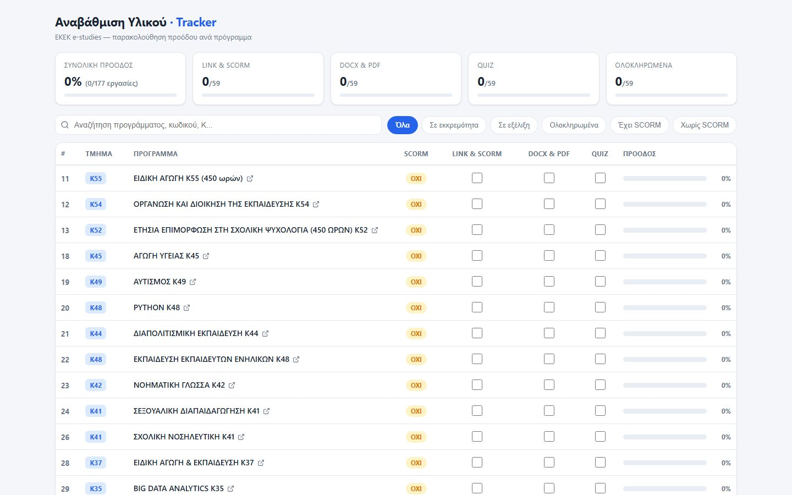
      <figcaption>Εσωτερικό εργαλείο παρακολούθησης · 177 εργασίες σε 59 προγράμματα</figcaption>
    </figure>

    <dl class="deliver">
      <div>
        <dt>Παραδοτέο 1</dt>
        <dd>Φάκελος HTML με όλα τα assets, για τοπική προβολή και αρχειοθέτηση.</dd>
      </div>
      <div>
        <dt>Παραδοτέο 2</dt>
        <dd>Πακέτο .zip SCORM, έτοιμο για εισαγωγή χωρίς αποσυμπίεση.</dd>
      </div>
      <div>
        <dt>Παραδοτέο 3</dt>
        <dd>Οδηγίες χρήσης και αναφορά ελέγχου, στα ελληνικά.</dd>
      </div>
      <div>
        <dt>Παραδοτέο 4</dt>
        <dd>Αντίγραφο ασφαλείας της προηγούμενης έκδοσης σε κάθε αναθεώρηση.</dd>
      </div>
    </dl>
  </div>
</section>

</main>

<footer>
  <div class="wrap">
    Portfolio ψηφιακών μαθημάτων · Τα στιγμιότυπα προέρχονται από τα ίδια τα παραδοτέα
  </div>
</footer>
</body>
</html>
